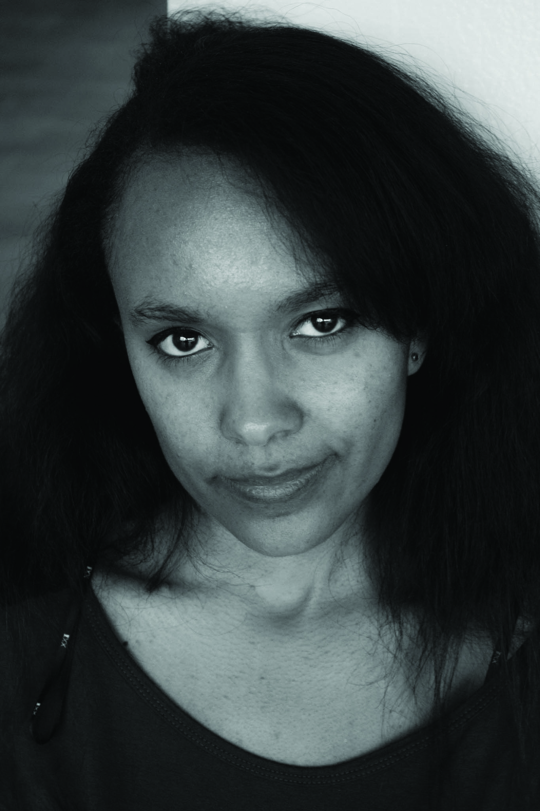

  <main>

    <div class="grid pad-t-2 gutter">

      <div class="img unit [ xs-1 s-1 m-1-2 l-1-3 ]  text-center me">
        
      </div>

      <div class="content gutter-half unit [ xs-1 s-1 m-1-2 l-1-3 ]">

          <h1 itemprop="name" class="push-12">Kiri Jurschewsky</h1>
          <p itemprop="description">Learning a new skill is always fun. Getting to explore multiple aspects is a great adventure, even if only one or two really stick. I love to inspire and be inspired by things</p>
          <p itemprop="description">I grew up all over the world and experienced many different cultures that affect my artistic and critical thinking. I'm inspired by so many different thinks and wish to explore more one day. </p>
          <p itemprop="description">I love seeing the art in Movies and TV shows. Whether it is the amazing photography or the music attached the scene, it has always inspired me and captivated me.</p>


        </div>

      </div>

  </main>
